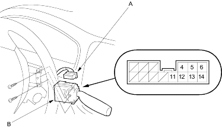
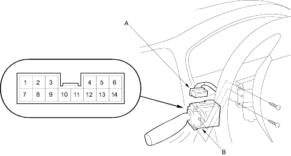

Wiper/Washers
Wiper/Washer Switch Test/Replacement
22-170
Remove the dashboard lower cover (see page
20-76
).
Remove the steering column covers (see page
17-9
).
Disconnect the 14P connector (A) from the wiper/washer switch (B).
LHD type and KE model:

RHD type except KE:

Remove the two screws, then pull out the wiper/washer switch.